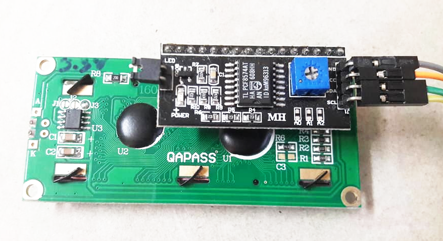

ARM Mbed OS for Raspberry Pi Pico RP2040: Code Examples (Part 4)#
เนื้อหาในส่วนนี้สาธิตการเขียนโค้ดโดยใช้ Mbed OS และ Arduino IDE สำหรับบอร์ดไมโครคอนโทรลเลอร์ที่ใช้ชิป RP2040 เช่น Raspberry Pi Pico โดยนำเสนอเป็น ตอนที่ 4 ต่อจาก ตอนที่ 1 | ตอนที่ 2 | ตอนที่ 3
Keywords: Mbed OS, Raspberry Pi Pico, RP2040, Mbed-enabled Platforms, RTOS Programming
▷ การใช้ไอซี I2C PCF8574 สำหรับเอาต์พุต#
ไอซี PCF8574 และ PCF8574A ทำหน้าที่เป็นอุปกรณ์ประเภท I2C Slave สำหรับการเพิ่มขา I/O จำนวน 8 ขา (8-bit I/O Expander) ให้กับไมโครคอนโทรลเลอร์ที่ทำหน้าที่เป็น I2C Master
ไอซีตัวนี้มีขา A2, A1, A0 เพื่อกำหนดค่าให้สามบิตแรกของแอดเดรส 7 บิต ของอุปกรณ์
ดังนั้นถ้านำไอซีชนิดเดียวกันนี้มาต่อเข้ากับบัส I2C
จะต้องตั้งค่าให้แอดเดรสของไอซีแตกต่างกัน และได้สูงสุด 8 แอดเดรสที่แตกต่างกัน
รูป: ตัวอย่างโมดูล PCF8574 Breakout Board และโมดูล 8x LED Bar (Active-low)
โค้ดตัวอย่างถัดไปสาธิตการใช้คำสั่งของ Pico SDK และเขียนโค้ด Arduino Sketch
เพื่อตรวจสอบดูว่า มีอุปกรณ์ I2C Slave ใดบ้างที่เชื่อมต่ออยู่กับบัส I2C หรือไม่
(ตรวจสอบและแสดงหมายเลขแอดเดรสของอุปกรณ์เหล่านั้น)
โดยเลือกใช้ขา GP6 และ GP7 สำหรับ SDA และ SCL ของบัส I2C1 ตามลำดับ
#include "pico.h"
#include "hardware/i2c.h"
#define SDA_PIN (6)
#define SCL_PIN (7)
#define PICO_I2C (i2c1) // use either i2c0 or i2c1
void i2c_scan( i2c_inst_t *i2c ) {
uint8_t val = 0x00;
char sbuf[8];
size_t num_devices_found = 0;
std::string strbuf = "Found: ";
for ( uint8_t addr=1; addr <= 0x7f; addr++ ) {
int ret = i2c_read_blocking( i2c, addr, &val, 1, false );
if (ret >= 0) {
sprintf( sbuf, "0x%02x", addr );
if ( num_devices_found > 0 ) {
strbuf += ", ";
}
strbuf += sbuf;
num_devices_found++;
}
}
if (num_devices_found==0) {
strbuf += "none";
} else {
sprintf( sbuf, " (%i)", num_devices_found );
strbuf += sbuf;
}
SerialUSB.println( strbuf.c_str() );
}
void pico_i2c_init() {
_i2c_init( PICO_I2C, 100000 );
gpio_set_function( SDA_PIN, GPIO_FUNC_I2C );
gpio_set_function( SCL_PIN, GPIO_FUNC_I2C );
gpio_pull_up( SDA_PIN );
gpio_pull_up( SCL_PIN );
}
void setup() {
SerialUSB.begin(115200);
while(!SerialUSB){}
SerialUSB.println("Pico RP2040 Demo...");
SerialUSB.flush();
pico_i2c_init( );
}
void loop() {
SerialUSB.println("I2C Scanning...");
SerialUSB.flush();
i2c_scan( PICO_I2C );
delay(2000);
}
ถ้าตรวจพบอุปกรณ์ I2C Slave ที่ต่อเข้ากับระบบบัส I2C จะแสดงค่าแอดเดรสเป็นเลขฐานสิบหกของอุปกรณ์เหล่านั้น ยกตัวอย่างเช่น
0x20ตรงกับอุปกรณ์ PCF8574T (ต่อขา A2=A1=A0=0 ไปยัง GND)0x40ตรงกับอุปกรณ์ HTU21D0x48ตรงกับอุปกรณ์ LM75A
รูป: ตัวอย่างข้อความเอาต์พุตเมื่อตรวจสอบอุปกรณ์ที่เชื่อมต่อเข้ากับบัส I2C
ถัดไปเป็นตัวอย่างโค้ดสาธิตการเขียนข้อมูลขนาดหนึ่งไบต์ไปยังไอซี PCF8574T และใช้ P0..P7 ของอุปกรณ์ดังกล่าวในทิศทางเอาต์พุตทั้ง 8 ขา
ข้อมูลที่ถูกส่งไปนั้น จะถูกใช้เพื่อกำหนดสถานะบิตที่ขาเอาต์พุตซึ่งต่อกับวงจร LED จำนวน 8 ชุด และทำงานแบบ Active-Low โค้ดในตัวอย่างนี้จะทำให้ LED เพียงหนึ่งดวงเท่านั้นที่อยู่ในสถานะ ON และเลื่อนตำแหน่งไปทางซ้าย (จาก P0 ไปยัง P7) แล้ววนซ้ำไปเรื่อย ๆ
ข้อสังเกต: ถ้าใช้ขาของไอซี PCF8574 ในทิศทางเอาต์พุต ควรจะใช้แบบ Current Sink และไม่เหมาะกับ Current Source ดังนั้นถ้าจะทำให้ LED สว่าง จะต้องต่อวงจร LED แบบ Active-Low และกำหนดค่าบิตสำหรับเอาต์พุตให้เป็น 0 จึงจะทำให้ LED สว่าง
#include "Wire.h"
#define I2C_ADDR (0x20) // I2C address of PCF8574T
void setup() {
SerialUSB.begin(115200);
while(!SerialUSB){}
Wire.begin(); // initialize the Wire object
Wire.setClock( 100000 ); // set I2C bus speed
}
void pcf8574_write_byte( uint8_t addr, uint8_t data ) {
Wire.beginTransmission( addr );
Wire.write( data ); // write a data byte
Wire.endTransmission();
}
uint8_t data = 0x01;
void loop() {
// send the inverted data byte to the PCF8574 device
pcf8574_write_byte( I2C_ADDR, data^0xff );
// rotate-shift-left
data =(data << 1) | (data >> 7);
delay(125);
}
รูป: ตัวอย่างการต่อวงจโมดูล PCF8574 เพื่อกำหนดสถานะเอาต์พุตของ 8-bit LED bar
▷ การใช้งานโมดูล I2C PCF8574 สำหรับอินพุต-เอาต์พุต#
ในตัวอย่างนี้สาธิตการใช้งานโมดูล PCF8574 (8-bit I/O Expander) โดยใช้ขา P7..P4 ของไอซีสำหรับการรับอินพุตจากวงจรปุ่มกด (Active-Low Switch) จำนวน 4 ชุด และใช้ขา P3..P0 เป็นเอาต์พุตสำหรับ LED (Active-Low) จำนวน 4 ชุด ดังนั้นจึงมีอุปกรณ์จับคู่กันแบบ I/O จำนวน 4 ชุด ตามลำดับ
การทำงานของโค้ดตัวอย่างนี้ เมื่อเกิดอินเทอร์รัพท์ จะคอยตรวจสอบดูว่า มีการเปลี่ยนแปลงสถานะของอินพุต (4 บิต) หรือไม่ ถ้าไม่มีการกดปุ่มใด ขาอินพุตของปุ่มกดนั้น จะมีค่าบิตเท่ากับ 1 แต่ถ้ามีกดปุ่มค้างไว้ในขณะนั้นจะได้ 0 เมื่อตรวจสอบพบว่า มีการกดปุ่มแล้วปล่อยในแต่ละครั้ง จะสลับสถานะ (Bit Toggle) ของ LED ในะตำแหน่งที่เกี่ยวข้องกับปุ่มดังกล่าว
ไอซี PCF8574 สร้างสัญญาณ IRQ (Interrupt Request) ที่ขา INT แบบ Active-Low เมื่อมีการเปลี่ยนแปลงที่ขา I/O ใด ๆ ของไอซีดังกล่าว และจะเคลียร์อินเทอร์รัพท์ได้โดยอัตโนมัติ เมื่อไอซีมีการเขียนหรืออ่านค่าในครั้งถัดไป ดังนั้นจึงสามารถนำมาใช้ในการตรวจสอบการเปลี่ยนแปลงของสถานะลอจิกที่ขา P7..P4 สำหรับปุ่มกดได้
#include "Wire.h"
#define I2C_ADDR (0x20) // I2C address of PCF8574T
#define IRQ_PIN (15) // use GP15 for interrupt
volatile bool isr_flag = false;
uint8_t update( ); // forward declaration
void setup() {
SerialUSB.begin(115200);
while(!SerialUSB){}
Wire.begin(); // initialize the Wire object
Wire.setClock( 100000 ); // set I2C bus speed
// enable interrupt (falling-edge) on IRQ_PIN
attachInterrupt( IRQ_PIN, [](){ isr_flag = true; }, FALLING );
pinMode( IRQ_PIN, INPUT_PULLUP ); // enable pullup on IRQ pin
update(); // update the I/O pins of PCF8574
}
bool pcf8574_transfer( uint8_t addr, uint8_t wdata, uint8_t *rdata ) {
Wire.beginTransmission( addr );
Wire.write( wdata ); // write one byte from PCF8574
Wire.endTransmission( false );
Wire.requestFrom( addr, 1, true ); // read one byte
bool ok = false;
if ( Wire.available() == 1 ){ // one incoming byte ?
*rdata = Wire.read(); // read the received byte
ok = true;
}
Wire.endTransmission();
return ok;
}
char sbuf[32];
static uint8_t leds = 0x0F;
const char *TO_BIN[] = {
// used to convert a nibble (0..15) to a bin string
"0000", "0001", "0010", "0011",
"0100", "0101", "0110", "0111",
"1000", "1001", "1010", "1011",
"1100", "1101", "1110", "1111",
};
typedef enum { ST_S0=0, ST_S1 } state_t;
static state_t state = ST_S0;
static uint8_t new_inputs, inputs;
uint8_t update( ) {
uint8_t wdata, rdata;
wdata = 0xF0 | leds;
bool ok = pcf8574_transfer( I2C_ADDR, wdata, &rdata );
return (ok) ? ((rdata >> 4) & 0x0F) : 0x0F;
}
void loop() {
switch (state) { // implements a finite-state machine
case ST_S0:
if ( isr_flag ) { // the ISR flag is set
isr_flag = false; // clear the ISR flag
inputs = update(); // read the button-input pins
if ( inputs==0x0E || inputs==0x0D ||
inputs==0x0B || inputs==0x07 ) {
state = ST_S1;
new_inputs = inputs; // save current inputs
sprintf( sbuf, "[%8lu] Button pressed : %s",
millis(), TO_BIN[inputs] );
SerialUSB.println( sbuf );
delay(50);
}
}
break;
case ST_S1:
inputs = update(); // read the button-input pins
if ( inputs == 0x0F ) { // no buttons pressed
isr_flag = false;
state = ST_S0;
leds ^= ~(0xF0 | new_inputs); // toggle LED bits
update(); // update output (leds)
sprintf( sbuf, "[%8lu] Button released: %s",
millis(), TO_BIN[inputs] );
Serial.println( sbuf );
}
break;
default:
state = ST_S0;
} // end-of-switch
}
รูป: การต่อวงจรทดลองบนเบรดบอร์ดเพื่อใช้งานโมดูล PCF8574 I/O
อีกตัวอย่างหนึ่ง คือการเปลี่ยนวงจร LED แบบ 4 บิต ที่ใช้แสดงสถานะเอาต์พุตเป็นโมดูลรีเลย์ (Relay Module) จำนวน 4 ช่องสัญญาณ แต่จะต้องใช้โมดูลรีเลย์ที่รับสัญญาณควบคุบและทำงานแบบ Active-Low
โมดูลรีเลย์ที่ได้เลือกมาทดลองใช้งานนั้น มี Jumpers (S1..S4) ให้เลือกได้ว่า จะใช้สัญญาณควบคุบแบบ Active-High (เลือกตำแหน่ง H) หรือ Active-Low (เลือกตำแหน่ง L)
รูป: แสดงตำแหน่งของ Jumper (S1..S4) สำหรับเลือกโหมดการทำงานแบบ Active-Low / Active-High
และ Terminal Blocks สำหรับสัญญาณอินพุต 4 ช่อง (IN1..IN4) และการป้อนแรงดันไฟเลี้ยง DC
รูป: โมดูลรีเลย์แบบ 4 ช่องสัญญาณเอาต์พุต (3-position Terminal Blocks)
โมดูลรีเลย์นี้ใช้แรงดันไฟเลี้ยง +5V สำหรับการทำงานของขดลวดภายใน (Coil) เพื่อสร้างสนามแม่เหล็กไฟฟ้าให้เปลี่ยนตำแหน่งของหน้าสัมผัสที่เป็นโลหะ และแยกสัญญาณภาคอินพุตจากวงจรรีเลย์โดยใช้ไอซี Optocoupler สำหรับแต่ละช่องสัญญาณ (มี 4 ช่อง)
#include "Wire.h"
#define I2C_ADDR (0x20) // I2C address of PCF8574T
#define IRQ_PIN (15) // use GP15 for interrupt
volatile bool isr_flag = false;
uint8_t update( ); // forward declaration
void setup() {
SerialUSB.begin(115200);
while(!SerialUSB){}
Wire.begin(); // initialize the Wire object
Wire.setClock( 100000 ); // set I2C bus speed
// enable interrupt (falling-edge) on IRQ_PIN
attachInterrupt( IRQ_PIN, [](){ isr_flag = true; }, FALLING );
pinMode( IRQ_PIN, INPUT_PULLUP ); // enable pullup on IRQ pin
update(); // update the I/O pins of PCF8574
}
bool pcf8574_transfer( uint8_t addr, uint8_t wdata, uint8_t *rdata ) {
Wire.beginTransmission( addr );
Wire.write( wdata ); // write one byte from PCF8574
Wire.endTransmission( false );
Wire.requestFrom( addr, 1, true ); // read one byte
bool ok = false;
if ( Wire.available() == 1 ){ // one incoming byte ?
*rdata = Wire.read(); // read the received byte
ok = true;
}
Wire.endTransmission();
return ok;
}
char sbuf[32];
static uint8_t leds = 0x0F;
const char *TO_BIN[] = {
// used to convert a nibble (0..15) to a bin string
"0000", "0001", "0010", "0011",
"0100", "0101", "0110", "0111",
"1000", "1001", "1010", "1011",
"1100", "1101", "1110", "1111",
};
typedef enum { ST_S0=0, ST_S1 } state_t;
static state_t state = ST_S0;
static uint8_t new_inputs, inputs;
uint8_t update( ) {
uint8_t wdata, rdata;
wdata = 0xF0 | leds;
bool ok = pcf8574_transfer( I2C_ADDR, wdata, &rdata );
return (ok) ? ((rdata >> 4) & 0x0F) : 0x0F;
}
void loop() {
switch (state) { // implements a finite-state machine
case ST_S0:
if ( isr_flag ) { // the ISR flag is set
isr_flag = false; // clear the ISR flag
inputs = update(); // read the button-input pins
if ( inputs==0x0E || inputs==0x0D ||
inputs==0x0B || inputs==0x07 ) {
state = ST_S1;
new_inputs = inputs; // save current inputs
sprintf( sbuf, "[%8lu] Button pressed : %s",
millis(), TO_BIN[inputs] );
SerialUSB.println( sbuf );
delay(50);
}
}
break;
case ST_S1:
inputs = update(); // read the button-input pins
if ( inputs == 0x0F ) { // no buttons pressed
isr_flag = false;
state = ST_S0;
leds ^= ~(0xF0 | new_inputs); // toggle LED bits
update(); // update output (leds)
sprintf( sbuf, "[%8lu] Button released: %s",
millis(), TO_BIN[inputs] );
Serial.println( sbuf );
}
break;
default:
state = ST_S0;
} // end-of-switch
}
รูป: การต่อวงจรทดลองเพื่อใช้งานโมดูล PCF8574
ตรวจสอบสถานะของปุ่มกดและควบคุมการทำงานของรีเลย์ 4 ช่องสัญญาณ
▷ การใช้งานโมดูล I2C Display LCD16x2#
โมดูล LCD ที่สามารถแสดงผลแบบ 16 ตัวอักษระในหนึ่งแถว และมี 2 สองแถว (LCD16x2) มีขาทั้งหมด 16 ขา แต่ถ้านำมาใช้ร่วมกับโมดูล PCF8574 Adapter จะใช้วิธีเชื่อมต่อกับไมโครคอนโทรลเลอร์ด้วยบัส I2C ทำให้ช่วยประหยัดการใช้สายไฟในการเชื่อมต่อ และสะดวกต่อการต่อวงจรใช้งาน
รูป: โมดูล LCD 16x2 และ PCF8574 I2C Adapter

รูป: โมดูล LCD 16x2 เมื่อเสียบขาใช้งานร่วมกับโมดูล PCF8574 I2C Adapter
ตัวอย่างโค้ดถัดไปสาธิตการสร้างคลาส C++ ชื่อ LCD_I2C เพื่อใช้งานโมดูล
LCD16x2 ร่วมกับ PCF8574 Adapter (มีแอดเดรสเท่ากับ 0x3f)
และสาธิตการใช้งานคลาสดังกล่าว โดยนำมาใช้แสดงค่าตัวเลขที่อ่านได้จากวงจรเซ็นเซอร์วัดอุณหภูมิภายใน RP2040
// file LCD_I2C.h
#ifndef __LCD_I2C__
#define __LCD_I2C__
#include "Wire.h"
#include "hardware/adc.h"
// PCF8574 P7..P0 = D7 | D6 | D5 | D4 | BL | EN | RW | RS
class LCD_I2C {
public:
LCD_I2C( arduino::MbedI2C *_i2c, uint8_t _addr )
: addr(_addr), i2c(_i2c), bl_mask(0x08) {
// empty
}
void begin() {
write4bits( 0x03 << 4 ); // 1. set 8-bit data interface
delay(5);
write4bits( 0x03 << 4 ); // 2. set 8-bit data interface
delayMicroseconds(120);
write4bits( 0x03 << 4 ); // 3. set 8-bit data interface
write4bits( 0x02 << 4 ); // 4. change to 4-bit data interface
lcd_cmd( 0x28 ); // function set: 2-line, 5x8 dots
lcd_cmd( 0x0c ); // display ctrl: display on, cursor off
lcd_cmd( 0x80 );
}
void clear() {
lcd_cmd( 0x01 );
}
void home() {
lcd_cmd( 0x02 );
}
void setCursor( int line, int pos=0 ) {
uint8_t val = (line==0) ? (0x80 + pos) : (0xC0 + pos);
lcd_cmd( val );
}
void print( const char *s ) {
uint8_t len = strlen(s);
for ( uint8_t i=0; i < len; i++ ) {
lcd_data( s[i] );
}
}
void backlight( bool onoff ){
bl_mask = (onoff) ? 0x08 : 0x00;
}
protected:
void i2c_write_u8( uint8_t data ) {
data |= bl_mask;
i2c->beginTransmission( addr );
i2c->write( data ); // write a data byte
i2c->endTransmission();
}
void write4bits( uint8_t wdata ) {
i2c_write_u8( wdata | (1<<2) ); // EN=1
delayMicroseconds(800);
i2c_write_u8( wdata ); // EN=0
delayMicroseconds(1200);
}
void lcd_write( uint8_t wdata, uint8_t cmd_mode ) {
uint8_t high_nibble = wdata & 0xf0;
uint8_t low_nibble = (wdata << 4) & 0xf0;
write4bits( high_nibble | cmd_mode );
write4bits( low_nibble | cmd_mode );
}
void lcd_data( uint8_t wdata ) {
lcd_write( wdata, 1 ); // RS=1
}
void lcd_cmd( uint8_t wdata ) {
lcd_write( wdata, 0 ); // RS=0
}
private:
arduino::MbedI2C *i2c;
uint8_t addr;
uint8_t bl_mask; // backlight bitmask
};
#endif
ตัวอย่างโค้ดทดสอบการทำงานของคลาส LCD_I2C
#include "LCD_I2C.h"
#define I2C_ADDR (0x3f)
#define SDA_PIN p6 // p6
#define SCL_PIN p7 // p7
#define ADC_VREF (3.3f)
#define CONVERSION_FACTOR (ADC_VREF/(1<<ADC_RESOLUTION))
void pico_adc_init();
float pico_adc_read_temp();
arduino::MbedI2C i2c( SDA_PIN, SCL_PIN );
LCD_I2C lcd( &i2c, I2C_ADDR );
char sbuf[32];
void setup() {
SerialUSB.begin(115200);
while(!SerialUSB){}
SerialUSB.println("Pico RP2040 Demo...");
SerialUSB.flush();
pico_adc_init(); // initialize the ADC
i2c.begin(); // initialize the I2C
i2c.setClock( 100000 ); // set the I2C speed
lcd.begin(); // initalize the LCD
lcd.clear(); // clear the LCD
char *lines[] = {"Pico RP2040", "LCD16x2 PCF8574A"};
for ( int i=0; i < 2; i++ ) { // foreach of two lines
lcd.setCursor(i, (16-strlen(lines[i]))/2 );
lcd.print( lines[i] ); // show the text line
delay(1000);
}
delay(1000);
lcd.clear(); // clear the LCD
}
void loop() {
lcd.clear();
lcd.setCursor(0, 0);
lcd.print( "Pico RP2040 ADC" );
lcd.setCursor(1, 0);
sprintf( sbuf, "Temp: %.1f deg.C", pico_adc_read_temp() );
lcd.print( sbuf );
Serial.println( sbuf );
delay(2000);
}
void pico_adc_init() {
adc_init();
adc_set_temp_sensor_enabled(true);
adc_select_input(4); // use ADC4
delay(100);
}
float pico_adc_read_temp() {
uint32_t value = 0;
// read ADC value four times and accumulate values
for ( int i=0; i < 4; i++ ) {
value += adc_read();
}
value >>= 2; // use the average value
// convert the ADC value to voltage and
// the corresponding temperature
float volt = value * CONVERSION_FACTOR;
float temp = (27 - (volt - 0.706)/0.001721);
return temp;
}
รูปแบบการเชื่อมต่อมีดังนี้
Pico LCD16x2_I2C
GND ---- GND
3.3V ---- VCC
GP6 <--> SDA
GP7 <--> SCL

รูป: การต่อวงจรเพื่อใช้งานโมดูล LCD16x2 I2C
▷ การใช้งานโมดูล I2C MCP4725 DAC#
ไอซี MCP4725 เป็นอุปกรณ์ประเภท DAC (Digital-to-Analog Converter) มีวงจรอิเล็กทรอนิกส์อยู่ภายในสำหรับทำหน้าที่แปลงข้อมูลดิจิทัลให้เป็นสัญญาณแอนะล็อก และส่งออกที่ขา VOUT
ข้อมูลมีขนาด 12 บิต (0..4096) และจะถูกแปลงแบบเชิงเส้น ให้เป็นแรงดันไฟฟ้าในช่วง 0..VCC โดยที่แรงดันไฟเลี้ยง VCC เลือกใช้งานได้ในช่วง +2.7V .. +5.5V
เนื่องจากไอซีนี้ทำงานเป็นอุปกรณ์ประเภท I2C Slave ดังนั้นการสื่อสารระหว่างไมโครคอนโทรลเลอร์กับไอซี
MCP4725 จะต่อวงจรเพื่อสัญญาณด้วยบัส I2C
และเพื่อความสะดวกในการต่อวงจรทดลอง ได้เลือกใช้โมดูล MCP4725 Breakout Board
(หมายเลขแอดเดรสตรงกับ 0x62)
ตัวอย่างโค้ดต่อไปนี้ สาธิตการใช้ค่าของตัวนับ dac_value
ที่มีค่าเพิ่มขึ้นจาก 0 ถึง 4095 (แล้วเริ่มใหม่ที่ 0) เป็นข้อมูลเพื่อส่งไปยังโมดูล MCP4725 และใช้เป็นค่าเอาต์พุต
#include <Wire.h>
// The A0 address pin of MCP4725 is left unconnected.
#define I2C_ADDR (0x62)
void writeDAC( uint8_t addr, uint16_t value );
void setup() {
SerialUSB.begin(115200);
while(!SerialUSB){}
analogReadResolution( 12 );
Wire.begin(); // initialze the I2C1 bus
Wire.setClock( 400000 ); // set I2C bus speed
writeDAC( I2C_ADDR, 0 );
}
const uint16_t MAX_VALUE = (1<<12);
char sbuf[32];
void loop() {
uint16_t sum, dac_value, adc_value;
for ( uint16_t i=0; i < MAX_VALUE; i+=8 ) {
dac_value = i;
writeDAC( I2C_ADDR, dac_value );
delayMicroseconds(10);
adc_value = analogRead( A0 );
sprintf( sbuf, "%lu, %lu", dac_value, adc_value );
SerialUSB.println( sbuf );
}
delay(5000);
}
// Use Fast Mode / Normal (No PowerDown)
// MSB..LSB = 0, 0, PD1=0, PD0=0, D11,..., D0
void writeDAC( uint8_t addr, uint16_t value ) {
value &= 0x0fff;
Wire.beginTransmission( addr );
Wire.write( (value >> 8) & 0xff ); // high byte
Wire.write( value & 0xff ); // low byte
Wire.endTransmission();
}
รูปแบบการเชื่อมต่อมีดังนี้
Pico MCP4725
3.3V ---- VCC
GND ---- GND
GP7 <--> SCL
GP6 <--> SDA
A0 (Not Connected)
GP26 <--- VOUT
สัญญาณเอาต์พุตที่ขา VOUT ของ MCP4725
จะถูกเชื่อมต่อด้วยสายไปกลับไปยังขา GP26 / ADC0 บนบอร์ด Pico
เพื่ออ่านค่าแรงดันอินพุตแล้วนำค่าที่ได้แปลงเป็นตัวเลข เก็บไว้ในตัวแปร adc_value
และส่งเป็นข้อความที่มีค่าของตัวแปรทั้งสอง ผ่านทาง SerialUSB
ไปยังคอมพิวเตอร์ของผู้ใช้ เพื่อแสดงเป็นรูปกราฟ (มีกราฟสองเส้นเปรียบเทียบกัน)
รูป: การต่อวงจรทดลองใช้งานโมดูล MCP4725 I2C DAC
รูป: การแสดงข้อมูลที่ได้รับมาในรูปของกราฟโดยใช้ Arduino Serial Plotter
This work is licensed under a Creative Commons Attribution-ShareAlike 4.0 International License.
Created: 2021-12-16 | Last Updated: 2021-12-18